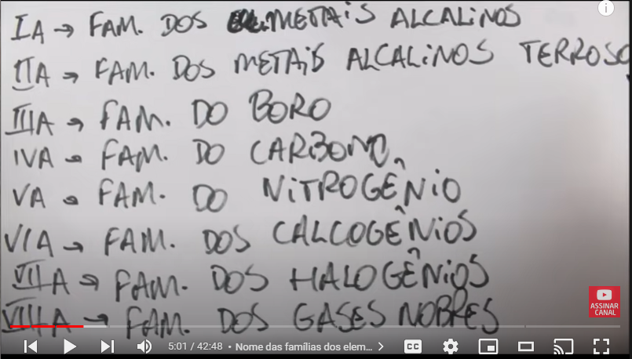
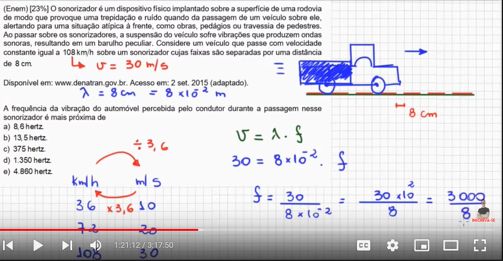

Exponential Equation
Mini Review
#mesmaBase: $$2^x = 8
2^x = 2^3$$
mesma base, ent ignore-a e faça a equação com os expoentes
#inverterFração
$$3^x = \frac{1}{81}$$
Fatora o 81 e fica igual a 3^4, ent:
$$3^x = \frac{1}{3^4}$$
usa a propriedade de inverter fração
$$3^x = 3^{-4}$$
#mesmaBase
$$x = -4$$>
Roots
raíz quadrada de 3 pode se tornar em potência passando o expoente 2 da raíz dividindo o expoente 1 do 3
Logarithm
Source
Propriedades
Ferreto Log Playlist (1/17)
- #baseNaoExplicita sempre é 10
$$\log_{a}b = x <-> a^x=b$$
Ex1:
$$\log_{2}3=x$$
$$2^x=3$$
- #logNatural
e = 2,71828...
$$\log_{e}x = \ln_{}x$$
- #condição
$$\log_{a}b = x <-> a^x=b$$
$a$ e $b$ devem ser reais e positivos, sendo $a$ diferente de $1$
>
propriedades
- #igualAUm [^1]
$$\log_{a}a = 1$$
- #regraDoPeteleco [^3]
$$\log_{b}a^n = n.\log_{b}a$$
- #petelecoDeCabeçaPraBaixo [^3]
$$\log_{b^n}a = \frac{1}{n}.\log_{b}a$$
- #igualAZero
$$\log_{b}1 = 0$$
- #hellElevadoAC [^2]
$$a^{\log_{a}c} = c$$
[^1]: Quando as opções n tem log, ent tenta fzr com q a propriedade #igualAUm se torne possível
[^2]: Essa propriedade só pode acontecer se o log tiver multiplicado a 1(se tiver nada a esquerda, subtende-se q é o número 1)
[^3]: Lembre-se q o inverso tbm pode acontecer. Se ja tiver numero multiplicando o log, vc pode botar como expoente no logaritmando
Mechanical waves
Notes
Onda transversal direçao perpendicular
Topo da onda
: Crista
Parte mais baixa
: Vales
Diferença entre Cristas ou vales
: Lambda(Comprimento de onda)
: velocidade da onda = comprimento de onda * frequência
Périodo(T) : intervalo de tempo gasto numa oscilação completa
Frequencia(f) : Npumero de oscilações por unidade de tempo; (f=n/*delta* T)
T = 1/f
Polarização
: Mudança de direção da ondulação de ondas tranversais
Ressonância
: aumento da amplitude de oscilação
Interferência
: Resultado da colisão de duas ondas
--------------
[^1]: Quanto maior o período (Tempo gasto numa oscilação), menor vai ser a frequência. Se a oscilação demora mais pra completar, então cabe menos oscilações em uma unidade de tempo, já q demora mais pra completar
Periodic Table
Source
Tabela Periódica 1
Tabela Periódica 2
utilidade
organização
ordem crescente dos números atômicos
saber características
Referenciais
Linhas horizontais são chamadas de períodos (total de 7)
Linhas verticais são chamadas de "grupos" (total de 18 grupos)
Famílias (número + letra; vertical)
A = P + N A = Número de massa != Massa atômica (Média aritmética ponderada dos isótopos de um determinado elemento químico)

Divisão
letra : família
A : Elementos representativos

mama boca nica haga
B : Elemento de transição
Transição interna
Série dos latinidios e actinidios
Transição externa
O resto
Quanto a subnível de maior energia
1A e 2A = s
Transição externa = d
Transição interna = f Exceto os dois ultimos